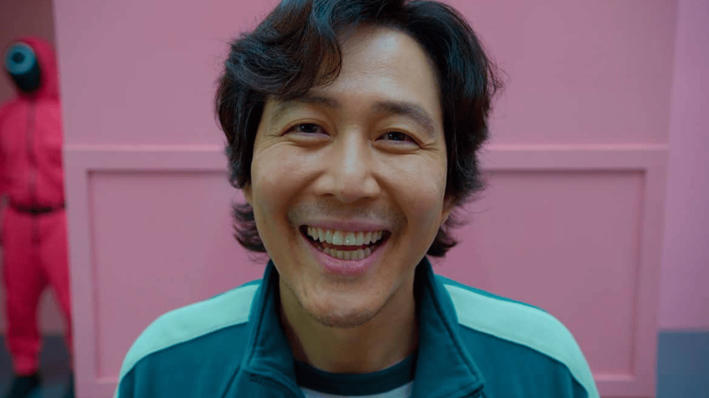

El juego del calamar
Cientos de jugadores cortos de dinero aceptan una extraña invitación a competir en juegos infantiles. Adentro les espera un premio irresistible... con un riesgo mortal.
Ver en netflix"El juego del calamar"es una serie de televisión surcoreana de supervivencia y drama que sigue a cientos de personas con problemas económicos que aceptan una extraña invitación para participar en una serie de juegos infantiles con la esperanza de ganar un premio considerable. Sin embargo, las apuestas son mortales, y solo uno puede salir victorioso.
La trama gira en torno a Seong Gi-hun, un hombre profundamente endeudado y con problemas familiares, quien se une a otros 455 participantes en un juego mortal. Los concursantes, todos ellos con graves dificultades financieras, son atraídos con la promesa de un gran premio en efectivo.
Los juegos, basados en juegos infantiles coreanos tradicionales, son aparentemente inocentes, pero rápidamente revelan su naturaleza letal. A medida que los participantes son eliminados, la tensión aumenta y la lucha por la supervivencia se intensifica.
La serie explora temas como la codicia, la desesperación, la manipulación y la naturaleza humana en situaciones extremas. Los participantes deben enfrentarse a dilemas morales y tomar decisiones difíciles para sobrevivir, revelando sus verdaderos caracteres bajo presión.
| Personaje | Actor |
|---|---|
| Song Gi-hun, Jugador 456 | Lee Jung-jae |
| Hwang In-ho, el líder | Lee Byung-hun |
| Lee Myung-gi, Jugador 333 | Im Si-wan |
| Kim Jun-hee, Jugador 222 | Jo Yu-ri |
| Hwang Jun-ho, el detective | Wi Ha-joon |
Los jugadores pueden avanzar después de que la inquietante muñeca Young-hee diga "Luz verde". Deben detenerse cuando ella diga "Luz roja". Los jugadores serán eliminados si detectan cualquier movimiento físico después del anuncio de "Luz roja". Tienen cinco minutos para cruzar el campo de juego y llegar a un lugar seguro para pasar a la siguiente ronda.
Los jugadores deben retirar la forma de su galleta, dejando un agujero perfecto en el centro, sin romperla ni agrietarla. Se les proporciona una aguja pequeña para facilitar el desafío. El tiempo límite para Dalgona es de 10 minutos.
Los jugadores se dividen en dos equipos, azul y rojo. Los azules se deben esconder mientras los rojos los cazan en un set lleno de pasillos, cuartos, escaleras y puertas. Los azules reciben una llave con forma de triángulo, círculo o cuadrado para que puedan abrir las puertas del set. Es una llave por jugador. Los rojos reciben un cuchillo.
Todos los participantes entran en una plataforma que gira. Mientras una tétrica música infantil retumba en las bocinas, las personas tienen que estar atentas al número de personas que digan los organizadores. La meta es agruparse en el número correcto y resguardarse en una cabina. Si te quedas fuera o el número es incorrecto, estás eliminado.
Temporada 1 | 1. «Luz roja, luz verde»
En bancarrota y con la esperanza de ganar dinero fácil, Gi‑hun acepta participar en un enigmático juego. Pero en la primera ronda, impensados horrores empiezan a ocurrir.
Ver episodio en netflix